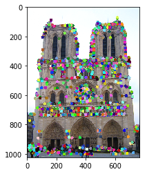
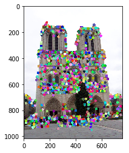
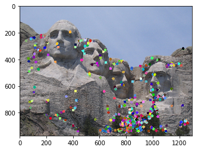
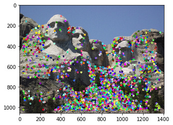
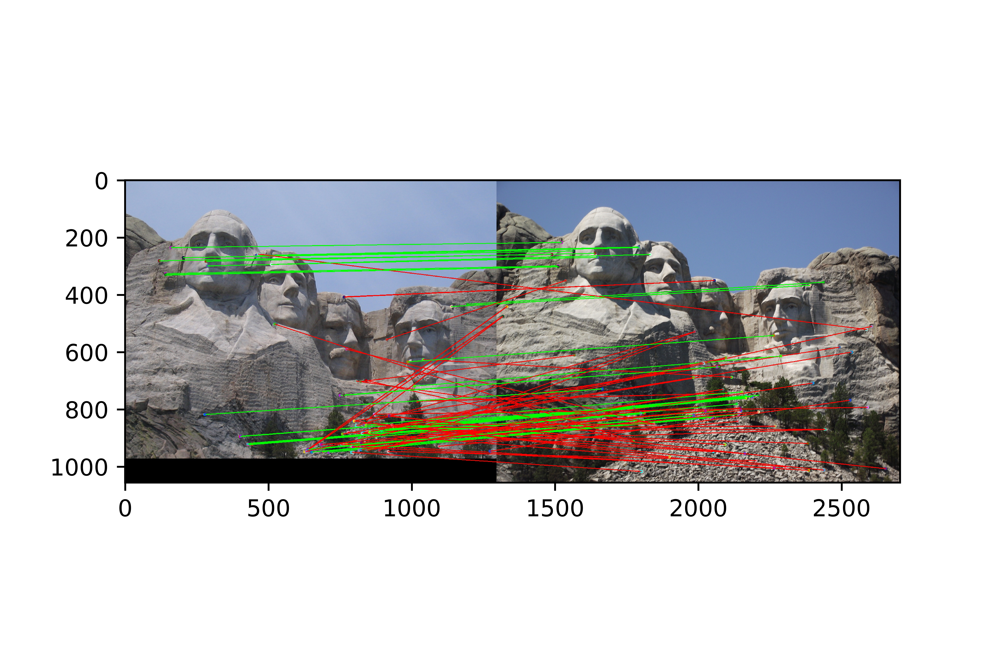
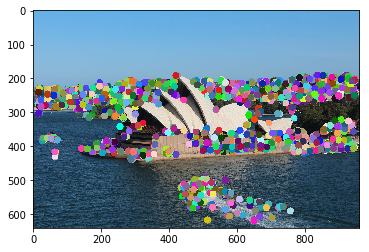
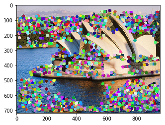
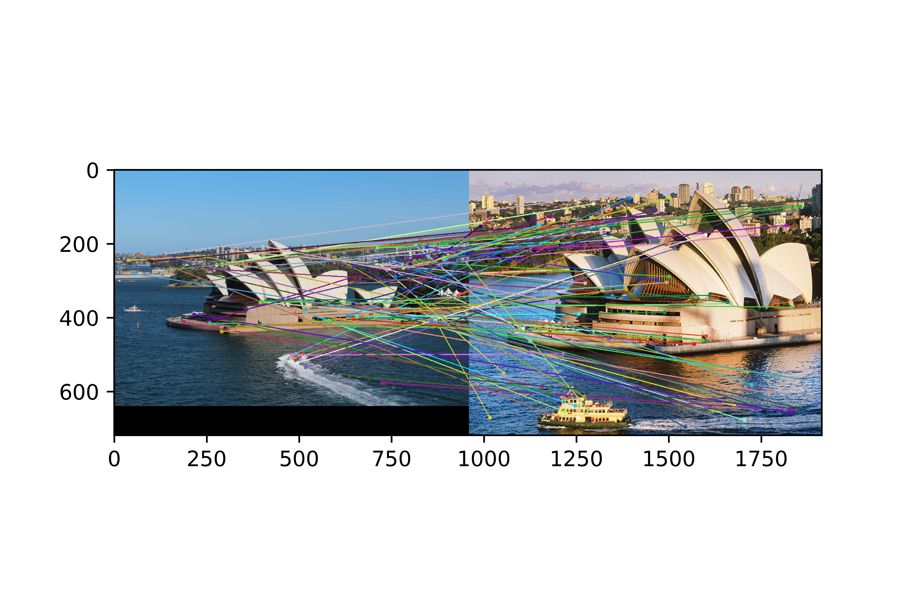

Project 2: Local Feature Matching
Fig.1 Top 100 matches in Notre Dam image pair.
Feature matching is a core component in image processing and computer vision. In this project we have resolved to local feature matching which enables the features detected, to be robust to occlusion and clutter. Since features are local, we can generate hundreds or thousands of them in a single image while being able to achieve real-time performance. Local feature matching finds application in object recognition, 3D reconstruction, image alignment, etc. For this project, Harris corner detector along with the sift feature descriptor is used to generate keypoints. We have also used adaptive non maximal suppression to get a uniform distribution of corners over the image. The entire algorithm can be summarized into the following steps:
- Finding corners in the image using Harris Corner Detector.
- Use adaptive non maximal supression to get a uniform distribution of corners.
- Generate 128 dimensional SIFT descriptor for each keypoint.
- Find the best match between features of two images by using euclidean distance as a parameter.
Harris Corner Detection
Fig. 2 Harris Corner Detector algorithm
Harris corner detection takes into account the fact that the corner points in an image are one of the most important features of an image. We take these corners and treat them as interest points, which are invariant to translation, rotation, and illumination. Corners are those pixels or subpixels in an image that yield a large change in appearance when we shift a square window/patch in any direction. The cornerness score of a particular pixel is determined by subtracting the square of the moment matrix with the determinant of the moment matrix. The threshold helps us in determining whether a pixel is a corner pixel or not. It the cornerness score of the pixel is above the threshold we consider it to be a corner else we ignore it. An image with the corners marked is shown in Figure 2. It can be seen that a large number of corners have been detected and the distribution of the corners over the image is not uniform. To ensure uniformity in the distribution of corners we use adaptive non maximal suppression which suppresses the excess corners.
Adaptive Non Maximal Supression
The corners generated using the Harris corner detector are not uniformly distributed. In many cases the corners might be concentrated on a particular patch of the image. This may cause the accuracy to drop in various applications such as object recognition. To avoid this problem a corner suppressor algorithm with the Harris corner detector is generally used to ensure uniform distribution. Usually, non maximal suppression is used which involves looking for local maxima in an interest function and discarding the remaining corners. By using this algorithm the accuracy of feature matching can be improved but it has certain limitations such as uneven distribution of feature points in an image. To avoid this, adaptive non maximal suppression has been used, which retains only those points that are maximum in a neighborhood of r pixels. Figure 3 and Figure 4 show a comparison between corners generated using the Harris corner detector and the corners remaining after suppression. The corners in the image have been suppressed from a few thousand to 150 corners.
Fig. 3 Harris Corner Detector algorithm
Fig. 4 ANMS Supression
SIFT Feature Descriptor
Fig. 5 Example of a 128 dimensinal feature vector.
The SIFT feature descriptor characterizes the appearance of each keypoint by generating a 3-D spatial histogram for each keypoint. Each keypoint is characterized by a 128-dimensional feature vector. Firstly, a 16X16 patch is taken around the keypoint which is further divided into 16 4X4 patches. For each 4X4 patch, an 8-dimensional feature vector is created which takes into account the direction and orientation of each pixel in the patch. The 16 4X4 patches generate 8-dimensional feature vectors which are concatenated together to generate a 128-dimensional feature vector for each keypoint detected. Figure 5 shows a spatial histogram of gradients.
Keypoint Matching
Fig. 6 Top 100 matches in Notre Dam image pair.
The feature vectors created for each keypoint are used to match the keypoints of the first image to the keypoints of the second image. To do this, the distance of each feature vector for each keypoint in the first image is to every feature vector of the second image is calculated. The distances are the then sorted, and the two least distances are taken and compared. For the keypoint to accurately match to another keypoint in the second image, the ratio of the two minimum distances is computed and checked if it is above a specified threshold, after which it is considered to be a keypoint. Figure 6 shows the top 100 keypoint matches in the Notre Dam image pair.
Results
The algorithm was tested on two pairs of images. An accuracy of 81% was achieved on the Notre Dam pair and 47% on the Mount Rushmore image pair. The results have been illustrated below.
| Corners(Image 1) Corners(Image 2) Top 100 Matches |



|
|    |
|    |
Conclusion
In this project, one application of Harris corner detection and SIFT descriptor has been shown to compare two images. With the help of the ANMS algorithm, the corners have been suppressed to get a more even distribution. The use of SIFT descriptor characterizes each keypoint uniquely by taking into account the magnitude and orientation of each pixel. This algorithm shows good results on images that have not been rotated or scaled and can be used to match a pair of images.
Future Work
For future work, scale and rotational invariance can be incorporated to get better results on the Mount Rushmore and Episcopal image pair. Also, the Harris corner detector can be replaced with superior blob detection techniques such as maximally stable external regions(MSER). By doing this, the accuracy of the matching can be brought up considerably, and at the same time, it will enable us to handle more challenging image pairs.